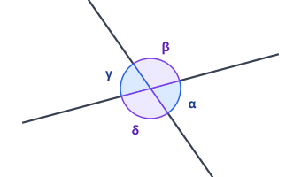
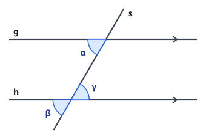

Winkel an Geradenkreuzungen
Mit einem KI-Tutor lernen
Ein KI-Tutor erklärt dir diese Seite und hilft dir bei den Aufgaben. Wähl deinen Assistenten:
Mit Claude öffnen Mit ChatGPT öffnen Mit Mistral Vibe öffnen
Du nutzt dein eigenes Konto beim Anbieter. Der Assistent ist kein Angebot von lernapps.net: lernapps liefert nur Inhalte und Aufgaben. Die Wahl gilt für alle Seiten, nur auf diesem Gerät.
Ziel: Ich kann Neben-, Scheitel-, Stufen- und Wechselwinkel erkennen und berechnen. Du brauchst den gestreckten Winkel von 180° von der vorigen Seite.
Probier zuerst
Aufgabe
Lösung
Richtige Antwort: 140 °
α und β bilden zusammen einen gestreckten Winkel: β = 180° − 40° = 140°.
Gleich groß oder zusammen 180°
α und β aus der Aufgabe heißen Nebenwinkel: Sie liegen nebeneinander an einer Geraden und ergeben zusammen 180°. An einer Kreuzung entstehen vier Winkel. Gegenüberliegende Winkel heißen Scheitelwinkel, sie sind gleich groß: α und γ sind beide Nebenwinkel von β, also bleibt für beide derselbe Rest bis 180°.

Gleiche Farbe heißt gleich groß. Je ein blauer und ein lila Winkel ergeben zusammen 180°.
Quelle: eigene Zeichnung. Lizenz: CC-BY-4.0.Jetzt schneidet eine Gerade s zwei parallele Geraden g und h. Verschiebst du die Kreuzung an g entlang von s nach unten, passt sie genau auf die Kreuzung an h. Darum ist β so groß wie α: Stufenwinkel liegen an beiden Kreuzungen an derselben Stelle. γ ist Scheitelwinkel von β, also auch so groß wie α: Wechselwinkel liegen auf verschiedenen Seiten von s, einer an g, einer an h – wie die Ecken eines Z.

Die Pfeilspitzen auf g und h zeigen: Die beiden Geraden sind parallel. α und β sind Stufenwinkel, α und γ Wechselwinkel.
Quelle: eigene Zeichnung. Lizenz: CC-BY-4.0.Das gilt nur, wenn g und h parallel sind. Es erklärt auch die Parallele durch C auf der vorigen Seite: Die Winkel neben γ sind Wechselwinkel zu α und β.
Ein Beispiel
Zwei Schritte über die Parallele
Angenommen, im Bild oben ist α = 65°. Gesucht ist der Winkel an h links oberhalb von h, also der Nebenwinkel von β. Für ihn gibt es keine Regel in einem Schritt, aber zwei Schritte gehen:
Antwort – Der Winkel links oberhalb von h ist 115° groß.
Erst prüfen, dann rechnen
Merke
Stufen- und Wechselwinkel sind nur an parallelen Geraden gleich groß. Steht nicht da, dass die Geraden parallel sind, darfst du sie nicht benutzen. Nebenwinkel liegen nebeneinander und ergeben 180°, Scheitelwinkel liegen sich gegenüber und sind gleich groß.
Jetzt du
Aufgabe
Lösung
Richtige Antwort: α und β – Nebenwinkel; α und γ – Scheitelwinkel; α und δ – Stufenwinkel; γ und δ – Wechselwinkel
δ liegt an h an derselben Stelle wie α an g. γ und δ liegen auf verschiedenen Seiten von s.
Aufgabe
Drei Beispielaufgaben, jede mit ihrer Lösung:
Aufgabe Nr. 1
Zwei Geraden schneiden sich. Einer der vier Winkel ist 85° groß. Wie groß ist sein Nebenwinkel?
Tipp
Nebenwinkel liegen zusammen auf einer Geraden.
Lösung
- Nebenwinkel ergeben zusammen 180°: 180° − 85°
- Der Nebenwinkel ist 95° groß.
Richtige Antwort: 95 °
Aufgabe Nr. 2
Zwei Geraden schneiden sich. Einer der vier Winkel ist 70° groß. Wie groß ist sein Nebenwinkel?
Tipp
Nebenwinkel liegen zusammen auf einer Geraden.
Lösung
- Nebenwinkel ergeben zusammen 180°: 180° − 70°
- Der Nebenwinkel ist 110° groß.
Richtige Antwort: 110 °
Aufgabe Nr. 3
Zwei Geraden schneiden sich. Einer der vier Winkel ist 80° groß. Wie groß ist sein Nebenwinkel?
Tipp
Nebenwinkel liegen zusammen auf einer Geraden.
Lösung
- Nebenwinkel ergeben zusammen 180°: 180° − 80°
- Der Nebenwinkel ist 100° groß.
Richtige Antwort: 100 °
Aufgabe
Drei Beispielaufgaben, jede mit ihrer Lösung:
Aufgabe Nr. 1
Die Geraden g und h sind parallel, die Gerade s schneidet beide. An g ist α = 150°. An h ist β der Stufenwinkel von α und γ der Nebenwinkel von β. Wie groß ist γ?
Tipp
Rechne in zwei Schritten – erst β, dann γ.
Lösung
- β ist Stufenwinkel von α an parallelen Geraden, also β = 150°.
- γ ist Nebenwinkel von β: 180° − 150° = 30°.
Richtige Antwort: 30 °
Aufgabe Nr. 2
Die Geraden g und h sind parallel, die Gerade s schneidet beide. An g ist α = 95°. An h ist β der Stufenwinkel von α und γ der Nebenwinkel von β. Wie groß ist γ?
Tipp
Rechne in zwei Schritten – erst β, dann γ.
Lösung
- β ist Stufenwinkel von α an parallelen Geraden, also β = 95°.
- γ ist Nebenwinkel von β: 180° − 95° = 85°.
Richtige Antwort: 85 °
Aufgabe Nr. 3
Die Geraden g und h sind parallel, die Gerade s schneidet beide. An g ist α = 80°. An h ist β der Stufenwinkel von α und γ der Nebenwinkel von β. Wie groß ist γ?
Tipp
Rechne in zwei Schritten – erst β, dann γ.
Lösung
- β ist Stufenwinkel von α an parallelen Geraden, also β = 80°.
- γ ist Nebenwinkel von β: 180° − 80° = 100°.
Richtige Antwort: 100 °
Aufgabe
Lösung
β = 50°
Das gälte nur an parallelen Geraden.
β = 130°
130° ist der Nebenwinkel von α, aber β liegt an h.
β lässt sich aus α nicht berechnen. richtige Antwort
Ohne Parallelen verbindet keine Regel α und β.
Hier müsste man β messen.
Aufgabe
Lösung
Richtige Antwort: 58 °
Der Stufenwinkel von α an h ist 64°, sein Nebenwinkel, der lila Winkel, 180° − 64° = 116°. Jede Hälfte ist 58°. ε und die Hälfte zwischen w und h sind Wechselwinkel an den Parallelen, also ε = 58°.
Aufgabe
Lösung
Richtige Antwort: Die Aussage stimmt nicht.
Scheitelwinkel sind gleich groß. Zusammen 180° ergeben Nebenwinkel.
Damit kannst du jeden fehlenden Winkel an Dreiecken, Vierecken und Geradenkreuzungen berechnen. Im nächsten Kapitel geht es um Symmetrie – um Figuren, die du falten und drehen kannst.
Fehler gefunden oder eine Idee für diese App?